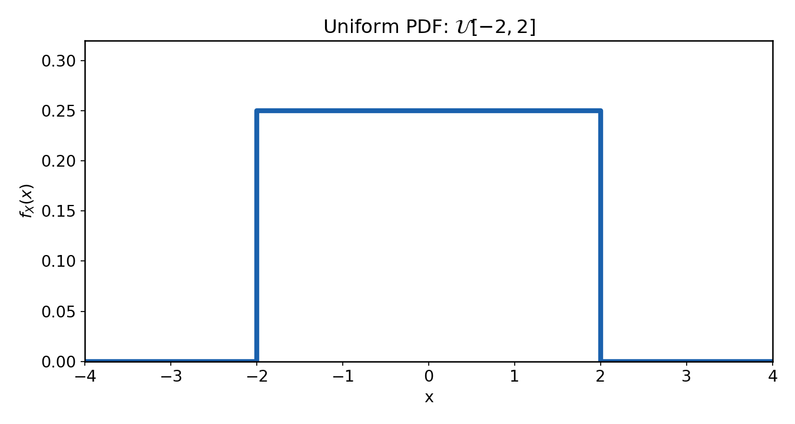
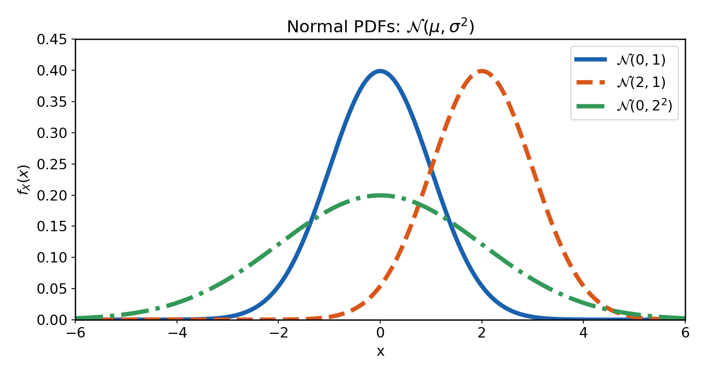

Distributions of random variables
Laboratory 2, DEDP
1 Objective
Generate uniform and normal samples in Matlab for different a, b, \mu and \sigma. Compare histograms and sample statistics with theory, and compute probabilities from data and from CDFs. Use erf() for the normal CDF.
2 Theoretical aspects
2.1 Probability density function
In this lab we consider continuous random variables.
A continuous random variable A is described by a probability density function (PDF) w_A(x), which indicates how likely is that A takes a value x. The PDF is also known as the distribution of A.
The probability of A being in the interval [a,b] is the area under the PDF in that interval, i.e. the integral of the PDF from a to b:
P(a<A\le b)=\int_a^b w_A(x)\,dx,
Only intervals have nonzero probability. The probability of A being exactly equal to a certain value is always zero.

The PDF is always w_A(x)\ge 0 and its integral is 1, but its values can be greater than 1.
The cumulative distribution function (CDF) is defined as the probability that A \le x:
F_A(x)=P(A\le x)
The CDF is nondecreasing and takes values between 0 and 1.
The CDF can also be used to compute probabilities over intervals:
P(a<A\le b)=F_A(b)-F_A(a).
The two functions are related. The PDF is the derivative of the CDF:
w_A(x)=\frac{dF_A(x)}{dx} \qquad \qquad F_A(x)=\int_{-\infty}^{x} w_A(t)\,dt.
Random samples
One value, or a vector of N generated values from a certain , is a random sample:
x = [x_1, x_2, \ldots, x_N].
Values change at every run, but their statistical behavior should remain the same.
The mean and the variance (or standard deviation) computed from a given vector of samples are known as sample mean and sample variance (or standard deviation).
% Sample mean, standard deviation and variance from data
sample_mean = mean(x_normal)
sample_std = std(x_normal)
sample_var = var(x_normal)The sample mean and sample variance are close to, but not exactly equal to, the theoretical mean and variance of the distribution (they are “estimates” of these theoretical values).
2.2 The uniform distribution
Definition and parameters
The uniform distribution describes a random variable that has equal chances of taking any value in a given interval [a,b].
It is denoted as:
A \sim \mathcal{U}[a,b], \qquad \textrm{ with } a < b.
Its probability density function (PDF) is defined as:
f_A(x) = \begin{cases} \dfrac{1}{b-a}, & a \le x \le b, \\ 0, & \text{otherwise}. \end{cases}
The PDF is constant on [a,b].

Its statistical mean and variance are
\mathrm{E}\{A\} = \frac{a+b}{2}, \qquad \sigma_A^2 = \frac{(b-a)^2}{12}.
Generating uniform samples in Matlab
rand() generates uniform values with 0<A<1. It does not matter if the endpoints 0 and 1 are included or not, because there are infinitely many values in the interval, anyway.
A = rand() % one value from U[0,1]
A = rand(1, 10) % row vector with 10 independent values from U[0,1]To obtain values from a general interval [a,b], scale and shift the values:
B = a + (b-a)A, \qquad A \sim \mathcal{U}[0,1].
a = 5;
b = 7;
N = 1000;
x_uniform = a + (b-a)*rand(1, N);Here, b-a sets the width and a sets the lower limit.
Probabilities for the uniform distribution
Probabilities are areas under the PDF.
For a uniform variable, computing probabilities amounts to computing some rectangle area, and can be computed easily.
Example: for X \sim \mathcal{U}[2, 10], the probability that X is between 3 and 5 is \frac{2}{8} = 0.25.
2.3 The normal distribution
Definition and parameters
The normal distribution describes a random variable that is more likely to take values near its mean \mu than far from it, according to a bell-shaped PDF (``Gaussian hat’’).
A normal variable is written as:
X \sim \mathcal{N}(\mu,\sigma^2), \qquad \sigma > 0.
Its probability density function is
f_X(x) = \frac{1}{\sigma\sqrt{2\pi}} \exp\left[-\frac{(x-\mu)^2}{2\sigma^2}\right].

The parameters:
- \mu: mean (the center);
- \sigma^2: variance;
- \sigma = \sqrt{\sigma^2}: standard deviation.
Changing \mu shifts the PDF. Larger \sigma means the function is wider and flatter, smaller \sigma means narrower and taller.
The standard normal distribution is the normal distribution with \mu=0 and \sigma=1:
Z \sim \mathcal{N}(\mu=0,\sigma^2=1).
Generating normal samples in Matlab
randn() generates values from the standard normal distribution \mathcal{N}(\mu=0,\sigma^2=1):
z = randn() % one value from N(0,1)
z = randn(1, 10) % 10 independent values from N(0,1)For arbitrary \mu and \sigma, scale with \sigma and shift with \mu:
B = \mu + \sigma A, \qquad \text{ where } A \sim \mathcal{N}(\mu=0,\sigma^2=1).
mu = 5;
sigma = 2;
N = 1000;
x_normal = mu + sigma*randn(1, N);Note: multiply by the standard deviation \sigma, not the variance \sigma^2.
Computing probabilities from the normal distribution
The integral of the normal PDF does not have a closed form, so it cannot be computed analytically. Instead, we rely on the precomputed erf() function in Matlab to compute probabilities.
For a normal variable A \sim \mathcal{N}(\mu,\sigma^2), the probability that A is in the interval [a,b] is:
P(a \le A \le b) = F_A(b) - F_A(a),
where F_A(x) is the cumulative distribution function (CDF) of A and is computed using the error function erf():
F_A(x) = P(A \le x) = \frac{1}{2}\left[1 + \operatorname{erf}\left(\frac{x-\mu}{\sigma\sqrt{2}}\right)\right].
In Matlab:
Example: A \sim \mathcal{N}(\mu=10,\sigma^2=4) and P(8 \le X \le 12):
mu = 10;
sigma = 2;
a = 8;
b = 12;
F_a = 0.5*(1 + erf((a-mu)/(sigma*sqrt(2))));
F_b = 0.5*(1 + erf((b-mu)/(sigma*sqrt(2))));
p_normal_theory = F_b - F_aThe result is approximately 0.6827. We can also estimate it from samples as before:
N = 10000;
x_normal = mu + sigma*randn(1, N);
p_normal_estimated = sum(x_normal >= a & x_normal <= b)/N;2.4 Histograms as a visualization of distributions
A histogram is a bar graph that displays the distribution of samples by counting them in intervals called bins:
% Generate 10000 samples from a uniform distribution on [-4, 10]
x_uniform = -4 + 14*rand(1, 10000);
% Show a histogram with 30 bins
histogram(x_uniform, 30)
xlabel('Value')
ylabel('Number of samples')
title('Uniform samples')
grid onTo get a PDF comparison, we need to normalize its area to 1, using the 'Normalization','pdf' option:
% Generate 10000 samples from a normal distribution with mean 5 and standard deviation 2
x_normal = 5 + 2*randn(1, 10000);
% Show a PDF-normalized histogram with 35 bins
histogram(x_normal, 35, 'Normalization', 'pdf')
xlabel('Value')
ylabel('Estimated probability density')
title('Normal samples')
grid onHistograms are a practical way to visualize the distribution of samples (values, pixels etc) in order to understand your data.
2.5 Summary: functions and notation you should know
| Signature or notation | Example | Description |
|---|---|---|
| X \sim \mathcal{U}[a,b] | X \sim \mathcal{U}[-4,10] | Uniform distribution on [a,b] |
| X \sim \mathcal{N}(\mu,\sigma^2) | X \sim \mathcal{N}(5,2^2) | Normal distribution: mean \mu, variance \sigma^2 |
rand(m,n) |
rand(1,1000) |
m \times n samples from \mathcal{U}[0,1] |
a + (b-a)*rand(m,n) |
-4 + 14*rand(1,1000) |
Samples from \mathcal{U}[a,b] |
randn(m,n) |
randn(1,1000) |
m \times n samples from \mathcal{N}(0,1) |
mu + sigma*randn(m,n) |
5 + 2*randn(1,1000) |
Samples from \mathcal{N}(\mu,\sigma^2) |
mean(x), std(x), var(x) |
mean(x), std(x), var(x) |
Sample mean, standard deviation and variance |
histogram(x,n) |
histogram(x,30) |
Histogram with n bins; add 'Normalization','pdf' for unit area |
erf(x) |
erf(1/sqrt(2)) |
Error function used in the normal CDF |
sum(condition)/N |
sum(x >= a & x <= b)/N |
Empirical probability |
3 Exercises
Write all commands yourself in a script or live script. Label figures and answer interpretation questions in comments.
Uniform random samples:
- Generate N=10000 samples from \mathcal{U}[-4,10].
- Display the min and max values of the vector. Why are the endpoints absent? and why does this not change the theoretical distribution?
- Compare
mean()with (a+b)/2. - Plot the first 100 generated values with
plot(). - Plot a 30-bin PDF-normalized histogram. What is its theoretical height?
The effect of the uniform-distribution parameters:
- Generate 10000 samples each from \mathcal{U}[0,1] and \mathcal{U}[5,7].
- Plot PDF-normalized histograms with equal bin counts in separate windows (
figure). - Describe the changes in PDF location, width and height.
Normal random samples:
- Set
mu1 = 2,sigma1 = sqrt(2), and generate 10000 samples from \mathcal{N}(\mu=2,\sigma^2=2) asx_normal_1. The second parameter is the variance. - Plot the first 100 values in the vector.
- Plot the histogram of all values.
- Compute the sample mean and standard deviation with
mean()andstd(), and compare with 2 and \sqrt{2}. Why are they not exactly equal? - Keep
sigma1, change \mu to -3, and compare histograms. What changes? - Keep
mu1, change \sigma to 0.5, and compare again.
- Set
Probabilities for a uniform variable:
Let X \sim \mathcal{U}[-4,10].
- Compute theoretically P(-1 \le X \le 3).
- Estimate it from Exercise 1 using logical comparisons and
sum(). - Compute and estimate P(X>7).
- Repeat for N=100, 1000, and 100000. How does error tend to change? Must it decrease at every run?
Probabilities for a normal variable using
erf():Let X \sim \mathcal{N}(\mu=2,\sigma^2=2).
- Use
erf()to compute the theoretical values of P(X \le 3), then P(0 \le X \le 4), then P(X>5). - Estimate all three from
x_normal_1. - Use
normcdf()function to compute the same probabilities (read the documentation about how to use it).
- Use
3.1 Supplementary exercises
Write
p = myCDF(v, x)to estimate P(V \le x):\widehat{F}_V(x) = \frac{\text{number of elements of }v\text{ that are}\le x} {\text{total number of elements of }v}.
Evaluate it at 100 points using a
forloop. Plot uniform and normal estimates against their theoretical CDFs.Write
p = myPDF(v, x, epsilon)to estimate the PDF aroundxfrom samples in [x-\varepsilon,x+\varepsilon]:\widehat{f}_V(x) = \frac{\text{number of samples in }[x-\varepsilon,x+\varepsilon]} {2\varepsilon\,N}.
Try several \varepsilon values. Explain the smoothness-detail trade-off.
4 Final questions
- Can a PDF be greater than 1? Why can probabilities still not exceed 1?
- Why can an estimate from N=1000 samples be worse than one from N=100?
- Two datasets have the same mean and variance. Must they have the same distribution?
- How could you decide whether measured data are better modelled by a uniform or normal distribution?